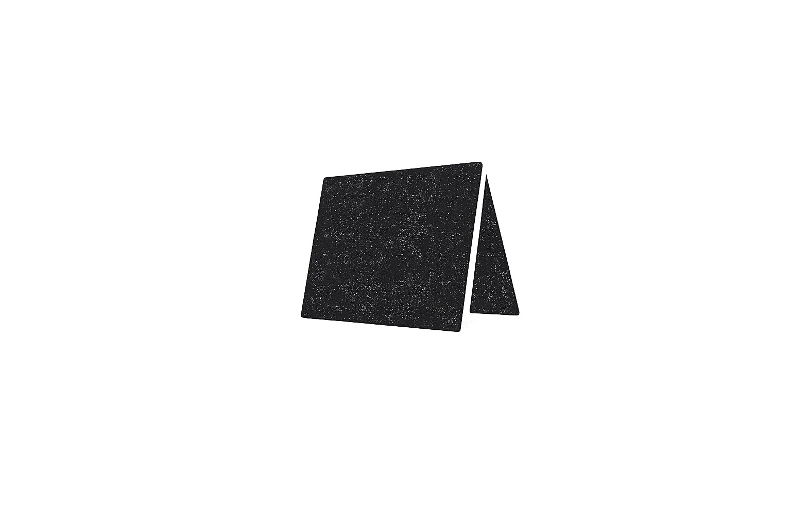
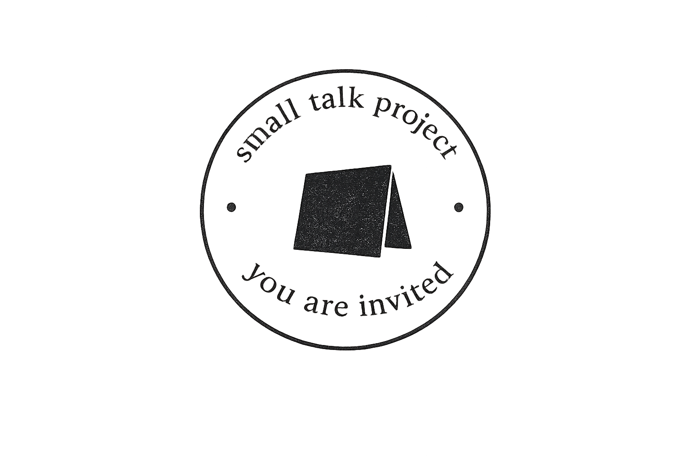

Polarized to Present
You are invited.
Low-barrier gatherings for meaningful conversation.
Small Talk Project creates temporary civic sanctuaries where strangers, neighbors, and returning guests can practice presence, respect, and curiosity.
The Ethos
Before we solve everything together, we may need to remember how to be with one another again.
Small Talk Project is a civic hospitality initiative for an increasingly reactive culture. It creates small, intentional gatherings where ordinary conversation can become a practice of presence, respect, and curiosity.
The Space
Borrowed Civic Sanctuary
Some spaces already know how to hold people.
A neighborhood café before opening. A bakery after closing. A familiar place temporarily transformed into an environment for presence, conversation, and relational ease.
We partner with community-rooted spaces to create temporary civic sanctuaries where strangers can encounter one another slowly and intentionally.
The Gathering
A simple civic ritual.
Arrival
Participants enter slowly, settle into the environment, and receive a folded note.
Exchange
Each participant exchanges part of the welcome with another.
Conversation
A guided conversation unfolds through listening, reflection, and curiosity.
Release
No forced conclusions. No performance. Simply a return to the world with greater awareness of one another.
The Practice
Presence. Respect. Curiosity.
Presence
Be fully engaged. Listen to understand rather than prepare a response.
Respect
Honor the dignity of each person. Separate perspective from personhood.
Curiosity
Seek understanding before certainty. Remain willing to encounter surprise.

The Invitation
A gathering begins with both presence and place.
Small Talk Project exists through people willing to enter conversation — and spaces willing to hold it.
Whether you hope to attend a future gathering or help host one, you are invited into the experiment.